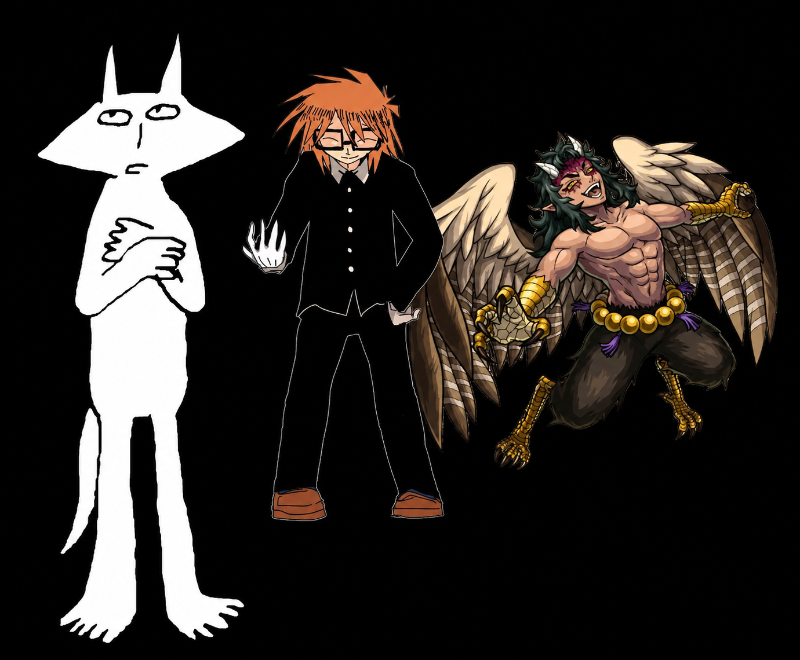

meu primeiro post!!!
Por: SOSOFI bb linda
GENTEE voces viram que Randal Ivory, Urogi e Puso foram oficialmente convocados pra jogar na seleçao brasileira nessa copa!!! infelizmente sal fisher so foi convocado pro time dos estragos unidos!!